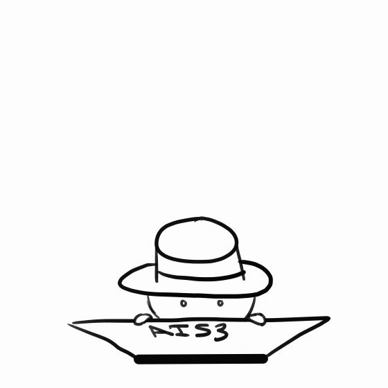

社群媒體詐騙帳號測驗
Home
(current)
Link
Dropdown
Action
Another action
Something else here

測驗名稱
開始測驗
Q1. 您是否更喜歡使用英文名字而非本名？
A. 比起中文名我更喜歡英文名
B. 我沒有特別喜歡哪一個
C. 比起英文名我更喜歡中文名
下一題
Q2. 在選擇產品時，你是否更看重產品的聲譽，而不是僅僅注重價格？
A. 比起價格，我更重視於產品的聲譽
B. 產品聲譽與價格同等重要
C. 比起產品的聲譽，我更重視於產品合理的價格
D. 沒有特別偏好
上一題
下一題
Q3.你是否喜歡在社交平台上公開自己相關狀態 (生日、居住地、就讀等資訊)？
A. 是的，我喜歡在社交平台上公開相關資訊，讓他人更容易了解我
B. 有時候會公開一些相關資訊，視情況而定
C. 不會在社交平台上公開相關資訊，保持隱私為主
上一題
下一題
Q4. 您在社交媒體或網路平台上貼文的照片主要是？
A: 多為自拍照
B: 均衡，各占一半，沒有那一方特別多
C: 多為他人拍攝的照片
D: 幾乎不貼照片
上一題
下一題
Q5. 在線上交流與分享對您而言是否重要？
A: 我經常與他人分享我所學習的專業知識
B: 我有時會在線上交流與分享，但頻率不高
C: 我不常與他人分享我所學習的專業知識
上一題
下一題
Q6. 在社交平台上與好友之間的互動頻率是？
A: 時常互動，基本每篇貼文都會回應或按讚
B: 有時互動，大約幾個月回應或按讚幾篇貼文
C:偶爾互動，不經常回應或按讚，久久幾次
D:很少互動，幾乎不回應或按讚
上一題
下一題
Q7. 你覺得你跟平台上好友有功同之處嗎？
A: 完全不相似，我和好友幾乎沒有共同之處
B: 各占一半，我和一些好友有共同之處
C: 完全相似，我和好友擁有許多共同之處
上一題
下一題
Q8. 你的社交帳號使用歷史範圍為何？
A: 相對較新，剛創辦不久
B: 中等歷史，使用時間大約大眾相近
C:創辦已久，已經有一段時間
上一題
下一題
Q9. 請問您目前的薪水屬於哪個區間？
A: 遠高於平均薪水
B: 略高於平均薪水
C: 接近平均薪水
D: 小於平均薪水
上一題
下一題
Q10. 您的社交帳號大頭貼是否為自己真實的人像照片？
A: 是的，我的頭貼都是我自己的照片
B: 是的，但我會用手機遮臉，或拍攝背面，以保護隱私
C: 不是，我的頭貼是卡通、明星、寵物等非真實人像照片
D: 我根本沒放圖片
上一題
提交
結果分析
您的分數：{{ scoreData.score }}
分享結果至社群平台 >
{{ message }}